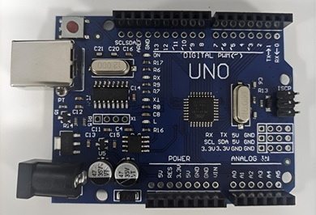

Arduino

Definição
É uma plataforma de prototipagem eletrônica de código aberto que combina hardware (uma placa com um microcontrolador) e software (uma ferramenta de desenvolvimento) para criar projetos interativos de forma acessível e simples.
Escala Analógica
A escala analógica do Arduino, nas placas mais comuns como Uno, Nano e Mega, possui resolução de 10 bits na entrada, variando de 0 a 1023, representando tensões geralmente entre 0 e 5 volts. Já na saída, os valores variam de 0 a 255, pois é utilizada a técnica de PWM, com resolução de 8 bits.
Entrada Analógica e Entrada Dijital
No Arduino, entrada analógica é o tipo de entrada responsável por ler sinais elétricos contínuos, que variam em uma escala numérica. No Arduino Uno, essa escala vai de 0 a 1023, representando uma variação de tensão de 0 V a 5 V, permitindo medir mudanças graduais de um fenômeno físico.
Já a entrada digital é a entrada que reconhece apenas dois estados possíveis em sua escala lógica: 0 (LOW / 0 V) para nível baixo e 1 (HIGH / 5 V) para nível alto.
Saída Analógica (PWM)
A saída analógica do Arduino refere-se ao PWM (Modulação por Largura de Pulso). Nesse método, o sinal não é contínuo, mas sim digital, alternando rapidamente entre ligado e desligado. A variação do tempo em que o sinal permanece ligado permite simular diferentes níveis de tensão média.
CLP (Modelo da CPU 1214c do tipo DC/DC/DC)

Definição
O CLP (Controlador Lógico Programável) é um equipamento eletrônico industrial projetado para automatizar e controlar máquinas e processos. Ele é composto por hardware robusto, capaz de operar em ambientes industriais, e por software de programação, usado para criar lógicas de controle baseadas em entradas e saídas. Seu objetivo principal é executar comandos de forma confiável, contínua e segura, substituindo sistemas antigos baseados em relés e temporizadores eletromecânicos.
Escala Analógica
A escala analógica em CLPs representa sinais contínuos, como 0 a 10 V ou 4 a 20 mA, convertidos em valores digitais internos. Geralmente, essa conversão ocorre em uma faixa como 0 a 27648 para 0-10 V, ou aproximadamente 5530 a 27648 para 4-20 mA, permitindo que o CLP processe os sinais com precisão.
Entrada Analógica e Entrada Dijital
Em um CLP, a entrada analógica é utilizada para ler sinais contínuos provenientes de sensores industriais. Ela trabalha com escalas padronizadas, como 0 a 10 V, ±10 V ou 4 a 20 mA, convertendo esses valores elétricos em números que representam variações graduais de grandezas físicas, como temperatura, pressão ou nível.
Saída Analógica
A saída analógica no CLP é um sinal contínuo e real, diferente do Arduino. Ela pode fornecer diretamente valores de tensão (0 a 10 V) ou corrente (4 a 20 mA), sendo utilizada no controle de equipamentos industriais, como motores, válvulas e inversores de frequência.